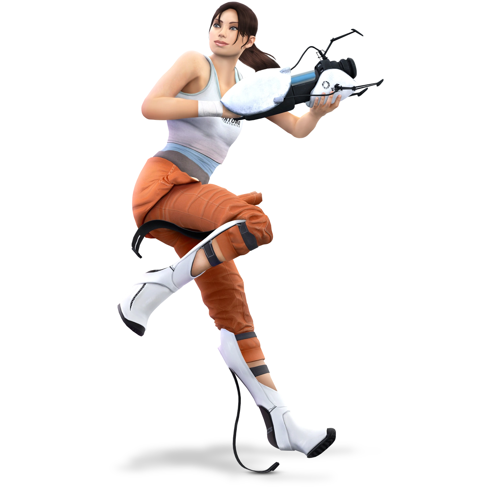
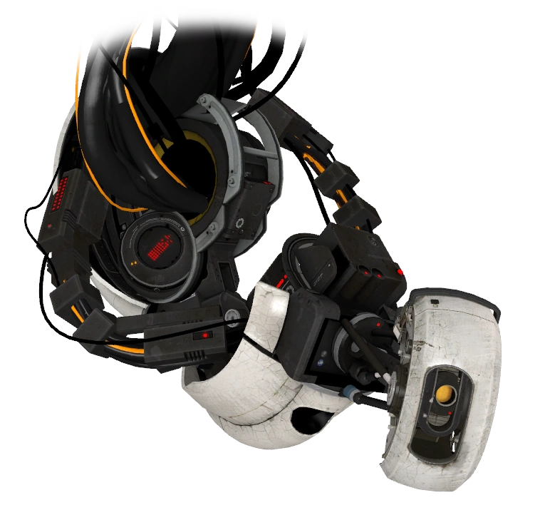
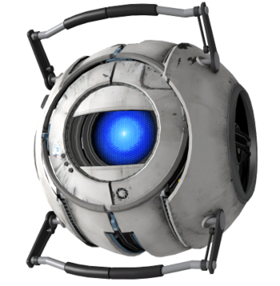
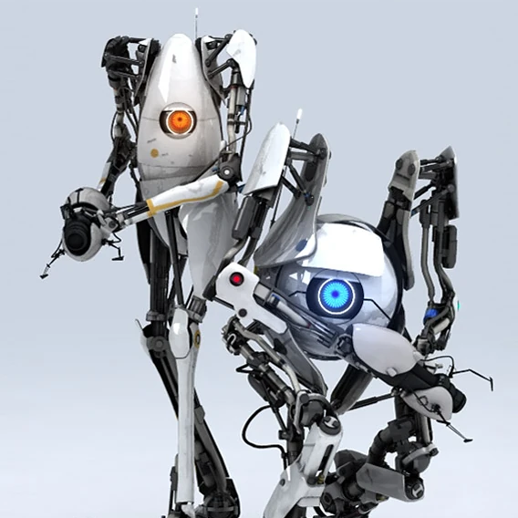
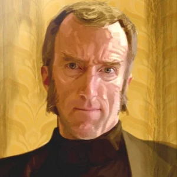
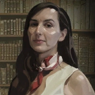
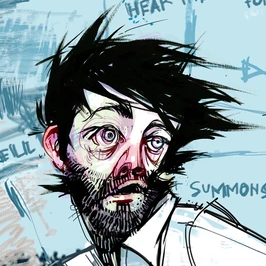
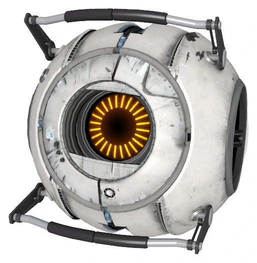

Челл - выглядит более ухоженной и
отдохнувшей. Её рессоры были
замененытна элегантные сапоги прыгуна.
Она носит всё тот же комбинезон, но
верхняя его часть завязана на поясе,
открывая белую майку с логотипом Aperture
Science и облегающие бледно-голубые
шорты или штаны.
GLaDOS - (Genetic Lifeform and Disk Operating System
— Генетическая Форма Жизни
и Дисковая Операционная Система, по
транслитерации — ГЛэДОС) — основной
антагонист Portal и первой половины Portal 2.
Как смотритель Центра развития,
GLaDOS находится в центральном зале
искусственного интеллекта.


Уитли - (или Модуль смягчения интеллекта) —
модуль персональности GLaDOS,
который она потеряла, и является как союзником,
так и антагонистом.
ATLAS и P-body - (также известные как Синий и
Оранжевый) — пара роботизированных
компаньонов[3] (основанные на модулях
персональности), которые являются
персонажами кооперативного режима.


Кейв Джонсон - основатель и генеральный
директор компании
Aperture Science с момента её основания и вплоть
до своей смерти от отравления
лунным камнем в конце 1980-х.
Кэролайн - помощница директора Aperture
Science Кейва Джонсона. Её голос
периодически можно услышать на
записанных заранее сообщениях.


Даг Раттманн - бывший научный сотрудник Aperture
Science, один из немногих
выживших после распыления GLaDOS нейротоксина. В
игре о нем можно узнать
только по надписям на стенах в некоторых тестовых
камерах.
Модули персональности - независимые
сферы, содержащие искусственный
интеллект, созданные Aperture Science для
широкого диапазона использования
в центре развития.
